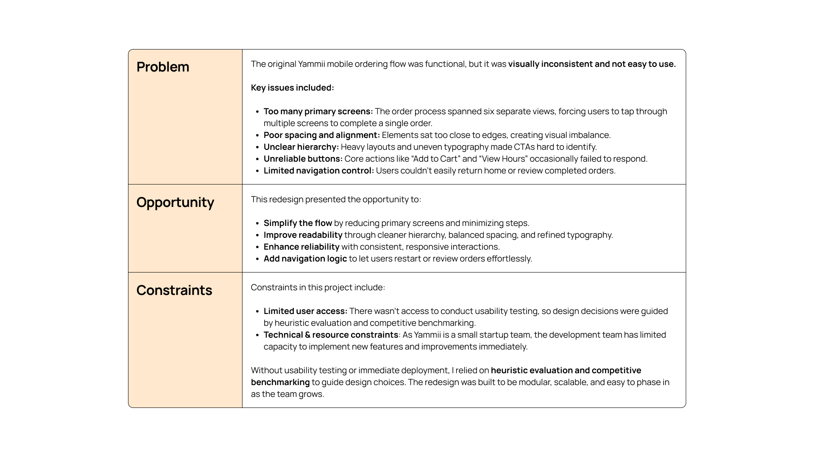
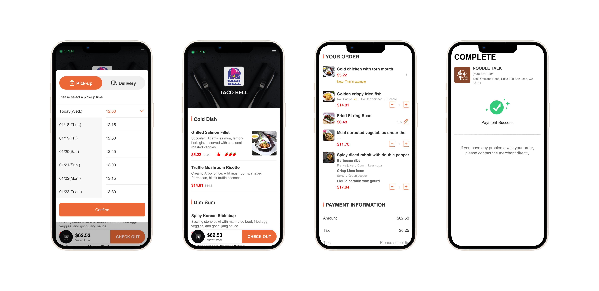
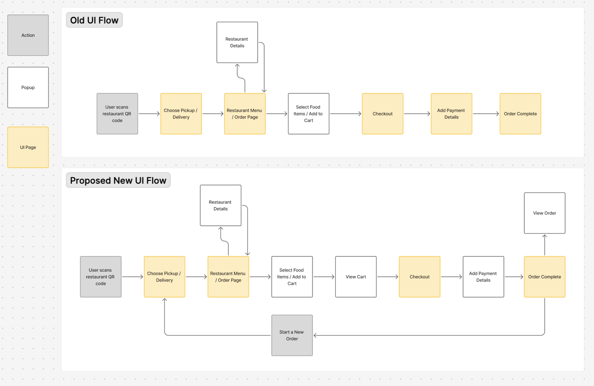
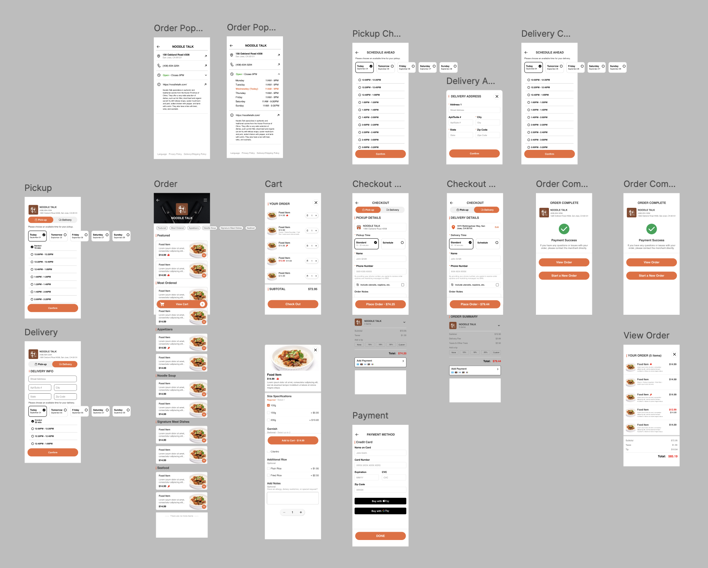
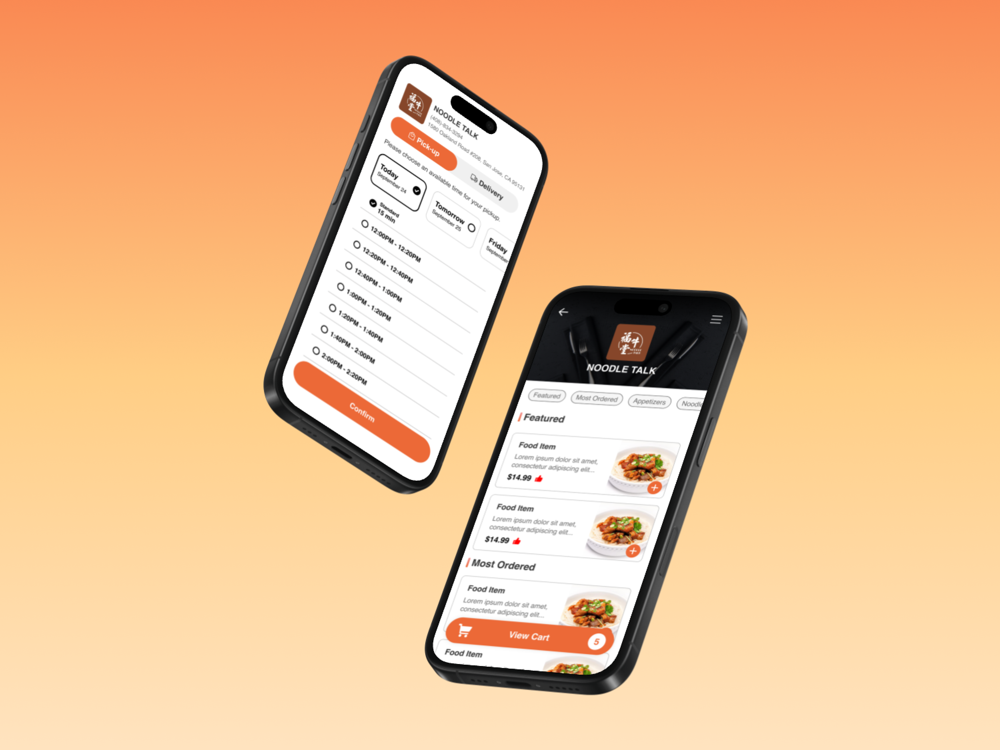
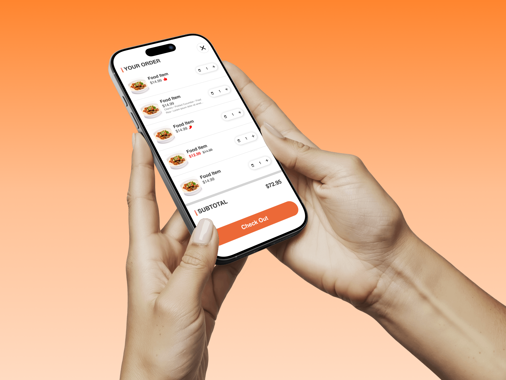

Introduction
In this project, I redesigned Yammii's mobile ordering flow for restaurant pickup and delivery. The existing experience worked functionally but lacked ease of use — it felt dense, unintuitive, and visually inconsistent. My goal was to design a more intuitive and visually appealing mobile flow that allows customers to browse, customize, and place orders smoothly.
Project Scope:

Research & Usability Audit
Since Yammii is an early-stage startup with limited resources for user testing, I conducted a heuristic evaluation, utilizing Nielson's 10 Heuristics, of the existing mobile order flow. My goal was to identify usability issues and inefficiencies. Additionally, I did competitive benchmarking of similar flows from competitors (such as Doordash and Uber Eats).
Examples of Current UI:

Key Findings:
These findings guided my redesign priorities and design goals:
- Simplify the mobile ordering flow by reducing unnecessary steps.
- Modernize the visual interface while maintaining Yammii's branding and design system.
- Enhance visual hierarchy to make actions clear and intuitive.
- Add navigation logic to reduce friction in the user experience.
Ideation & Wireframing
I began by user flow mapping and creating low-fidelity wireframes. I ensured every design decision connected back to simplifying the ordering flow, refreshing the UI, and improving navigation logic.
User Flow Map:

Lo-Fi Wireframe:
 Stage 3
Stage 3
Hi-Fi Design
After finalizing the low-fidelity design, I went into Figma to create and test high-fidelity wireframes. The final design delivers a cleaner, more intuitive mobile ordering experience by simplifying the flow, clarifying visual hierarchy, and modernizing the interface.
Hi-Fi Wireframe:

Key Features and Improvements:
Reduced order steps from 6 to 5, resulting with a faster checkout experience.
Added options to "View Order" and "Start a New Order" after completing an order and fixed unresponsive buttons.
Updated icon set, UI layout, and component hierarchy to improve readability and consistency.
The Outcome
Below is the video prototype and mockup images of the redesigned mobile order flow.


Reflection
Learnings
This project was my first time redesigning a production-level mobile UI for a real company. I strengthened my ability to work systematically in Figma — building reusable components, establishing consistent spacing and typography scales, and designing with scalability in mind. Working without direct user feedback pushed me to rely on usability heuristics, competitive analysis, and structured design reasoning.
Challenges
A major challenge was the lack of access to real users for usability testing. I had to be intentional about documenting design decisions and tradeoffs. Working with an existing product also introduced constraints around what could realistically be changed versus what needed to remain familiar for returning users.
If I had more time
I would extend the redesign to the desktop experience for cross-platform consistency, prioritize lightweight usability testing to validate the flow, and refine edge cases, accessibility considerations, and interaction details such as motion and microinteractions.
Takeaway
Strong UX design isn't about perfect conditions — it's about making thoughtful, evidence-based decisions within real-world constraints. This redesign provides a clear direction for how Yammii's mobile ordering could scale more effectively.